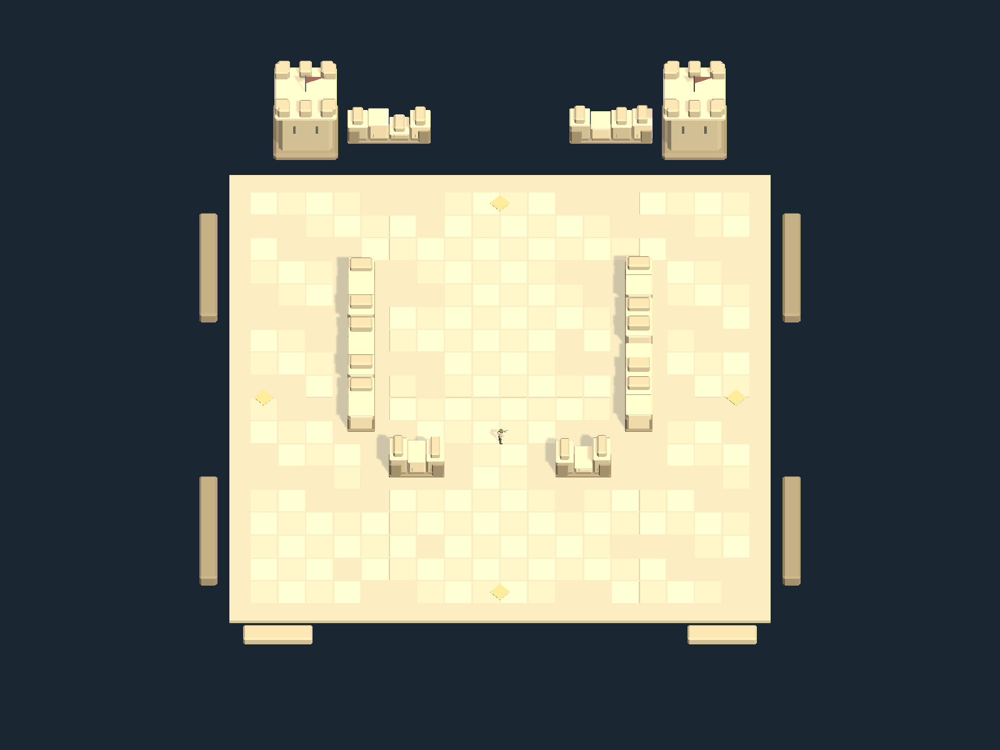
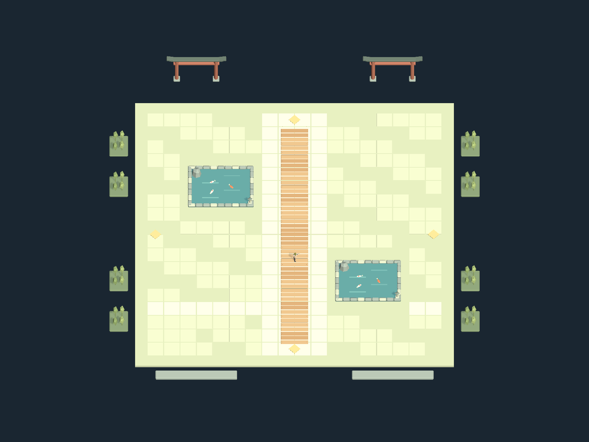
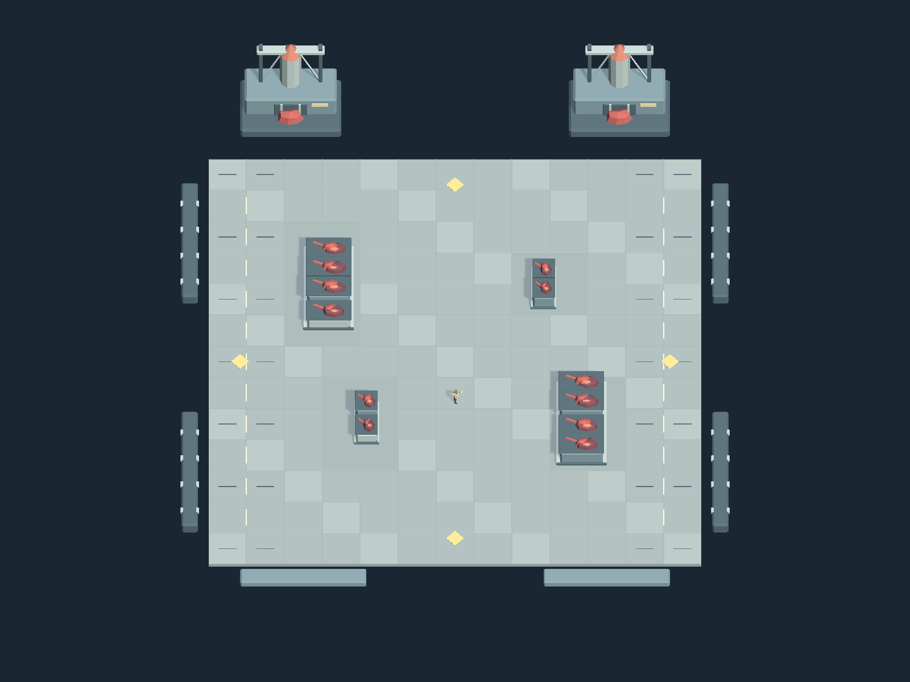

FIREPOWERLOOP / TEN STAGES / ADOPTED VISUALS
三场景与四种怪物 · 正式资源回读
采用你确认的要塞庭院、锦鲤桥庭、终局巢穴，以及蜘蛛、食尸鬼、红色重甲怪、僵尸暴龙。现有十关四十轮路线、通道和战斗规则保留。
这里展示正式资源的隔离回读，包含正式主角尺寸参照。实玩、真实双人和真机验收按你的最新要求暂缓，不计为完成。
三场景 · 每场四轮



四种怪物 · 跟随实际战斗状态
步态由实际移动驱动，攻击与收招由战斗状态驱动。蜘蛛使用原近战；食尸鬼展示冲进；红色重甲怪展示原追踪炮；僵尸暴龙展示原三个技能周期。